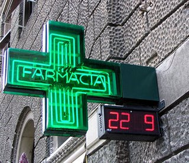

Italian pharmacies are recognizable by a green or red cross displayed outside the store. Pharmacies are privately owned stores and you won't find them in any big grocery stores as in the USA. The pharmacists, who are all professionally trained, are reliable and many of them speak English, especially in the big cities and tourist areas. Pharmacies have their own hours and are usually open from Monday through Friday, 8:30am to 1pm and 4pm to 7:30pm. Many of them are open on Saturday, while most are closed on Sunday. Every pharmacy posts a list indicating which pharmacies in the area are open outside of regular business hours, including night shifts. In Italy, over the counter as well prescription medicines can only be given to you by the pharmacist (farmacista). In Italy what is considered to be over the counter products are only non-drug items such as baby, beauty or personal care products, and many similar others. (This is just a small excerpt from Chapter 8 – Hospitals & Medical Assistance of our eBook.)